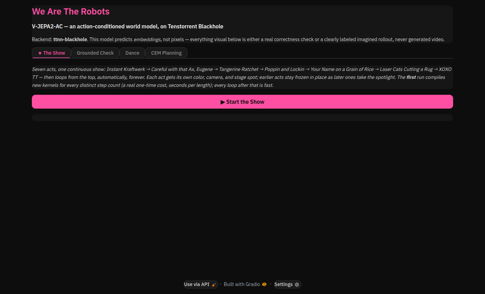
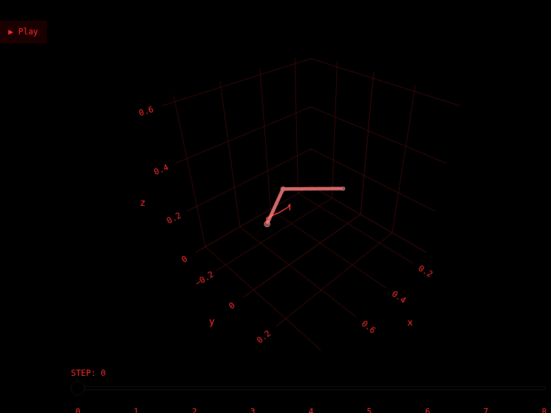
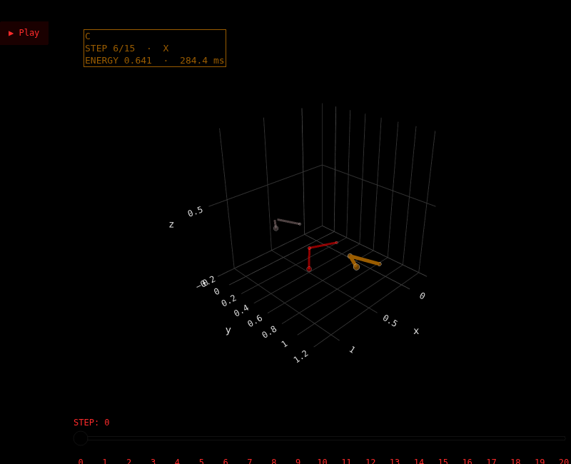
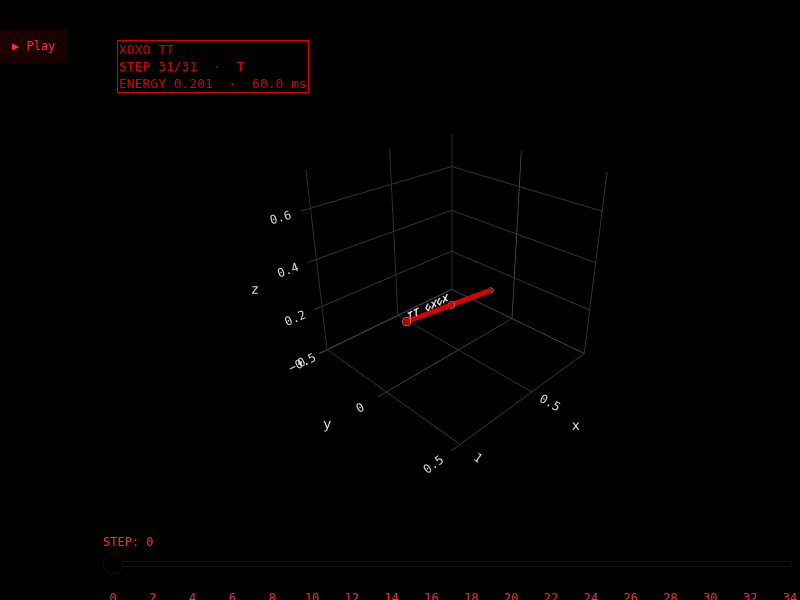

Part 1
What a world model actually predicts
Most "video AI" people have encountered generates pixels: give it a prompt or a frame and it paints you the next one. V-JEPA2-AC does something stranger and, for robotics, more useful. It never renders anything. It encodes a frame into a compressed representation — an embedding — and predicts the next embedding, conditioned on an action the robot might take. No pixels are ever generated, checked, or even implied to exist.
Why does this matter for robots? Because planning is now a search problem in embedding space, not pixel space. Sample a few hundred candidate action sequences, run each one through the predictor, and keep whichever one lands closest to a goal embedding — that's the Cross-Entropy Method (CEM), and it's how Meta's own researchers get this model to solve real manipulation tasks without any task-specific training. No renderer, no simulator, no reward function hand-tuned per task. Just "does this action get me closer, in the space the model actually understands."
Part 2
What's really happening on the chip
Porting this to TTNN (Tenstorrent's tensor library) meant reimplementing the encoder and predictor as device-side operation graphs, layer by layer, and checking every one of them against the real reference implementation. That process surfaced several real bugs — not hypothetical edge cases, but things that would have silently produced wrong answers if left unchecked.
The reference implementation's rotary position embeddings block-duplicate
their frequencies (cat([freq.sin(), freq.sin()])) instead of
interleaving them — not the usual RoPE convention, but the pretrained
weights were trained against it. Getting this wrong dropped accuracy to
0.83 PCC after 40 blocks. The fix wasn't a numerics tweak; it
was reproducing someone else's bug on purpose, because the weights expect it.
Profiling found that roughly 95% of device time was going to
reshape/slice/permute scaffolding around RoPE application — not the
matrix multiplies doing the actual work. Replacing a per-axis
slice→rotate→concat loop with one call to
ttnn.experimental.rotary_embedding_llama (verified bit-for-bit
identical, PCC 1.0, before trusting it) cut end-to-end latency from
2913 ms to roughly 121 ms per
forward pass.
The predictor's frame-causal attention needs a block-structured mask, and
ttnn.transformer.scaled_dot_product_attention's built-in
attn_mask support doesn't produce correct results at that shape
(PCC 0.927 masked vs. 0.997 unmasked, independent of mask magnitude —
which rules out a numerics explanation and points at the kernel). A manual
matmul→softmax→matmul with the same additive mask gets PCC 0.9999.
Building an "imagination rollout" — chaining the predictor's own output
back in as the next frame, the same trick Meta's CEM planner uses —
means the attention context grows by one frame every step. The predictor's
rope/mask cache was keyed per sequence length and never evicted: fine for a
benchmark that only ever revisits one fixed shape, fatal for a rollout that
visits a new one every step. It crashed with a DRAM allocator error
(TT_FATAL: Out of Memory) around 60–90 steps into a long
rollout — reproduced twice, including on a freshly reset device, before
the actual cause (an unbounded per-shape cache, not fragmentation) was found
and fixed.
| Configuration | Latency | Throughput |
|---|---|---|
| Blackhole · TTNN, bf16-mixed, traced replay | 120.7 ms | 66.3 frames/s |
| Same host's CPU · reference PyTorch, fp32 eager | 4293.2 ms | 1.86 frames/s |
Same weights, same 8-frames-@-256px shape, same machine — the CPU number is the honest baseline available (no GPU was on hand to compare against), not a claim about GPU-class hardware. Correctness throughout: PCC ≥ 0.995 for both the encoder and predictor against the reference implementation, mixed bf16/fp32 precision (bf16 where the FLOPs are, fp32 where 40–64 layers of depth make precision loss compound).
Part 3
Proving it with a dancing robot arm
Numbers on a page are convincing. Watching a model keep predicting, frame after frame, without ever seeing a real camera again after the first one, is more convincing. So: a Gradio app that stages a small robot end-effector through a seven-act show, entirely imagined — the model chaining its own predicted embeddings forward exactly the way CEM planning does, just driven by a choreography instead of an optimizer.




Every color you see is driven by a real signal, not decoration — a convention borrowed from tt-toplike, Tenstorrent's own hardware-telemetry visualizer: hue and brightness come from the model's own per-step "energy" (how much its prediction changed) and the real measured forward-pass latency for that step, never a canned animation value.
Part 4
Why this matters beyond one robot arm
The interesting claim here isn't "a robot dances." It's that a real, pretrained world model — the kind of model a planning stack would actually use to evaluate thousands of candidate actions before a robot moves — runs at 66 frames/sec on a single Blackhole chip, with correctness verified layer by layer against the original research code. A few implications follow from that:
- Planning in latent space is cheap once the model runs fast. CEM-style planning needs to evaluate many candidate action sequences per decision. At 120 ms/forward, evaluating a batch of them stops being the bottleneck — the search itself, or the robot's own physical constraints, becomes the limiting factor instead.
- The bring-up bugs are the interesting part, not a footnote. A block-duplicated RoPE convention, a framework mask bug, an unbounded per-shape cache — none of these show up in a paper's abstract, but every one of them is exactly what stands between "the algorithm works" and "the algorithm runs correctly, quickly, on real silicon." Porting research models to new hardware is where a lot of ML engineering actually happens.
- Action-conditioned world models generalize past the one dataset they were trained on. The AC predictor here was trained on DROID robot interaction data, but the mechanism — predict an embedding, condition on an action, search over action sequences — doesn't care what the actions represent. The same shape of model could condition on a game controller input, a steering command, or an API call, with the model itself unchanged.
- This is a demonstration of TTNN as a real bring-up target, not a vendor benchmark. Every number on this page came from actually rewriting the model layer by layer, verifying each layer, and fixing what broke — not from a synthetic microbenchmark. That's the bar a new research model needs to clear to be worth running on new hardware, and this one cleared it.